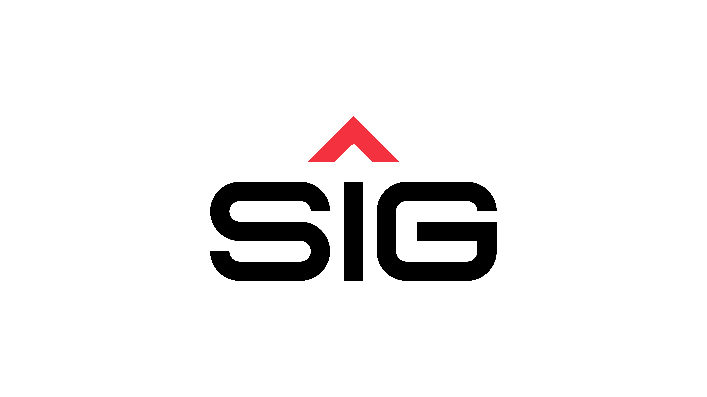
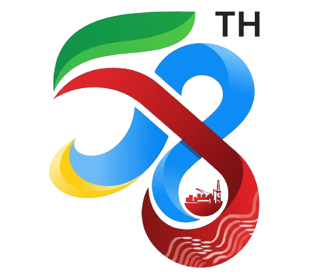

Pilih Layar TV Display
Pilihan ini akan otomatis tersimpan saat halaman dimuat ulang (reload).
🏥 UTD PANGKEP & STMC
Nomor Antrian Oranye (P-001 s/d P-200)
🩸 PMI MAKASSAR & STMC
MM Biru (Manual) & MO Merah (Online)

Antrian Donor Darah
Semen Tonasa Medical Center
|
00:00:00

RUANG DONOR DARAH
Bed Donor Siap
--
Silakan Menunggu Panggilan
Daftar Menunggu
0 antrian
Belum ada antrian...
★ HUT KE-58 PT SEMEN TONASA ★ Terima kasih pahlawan donor darah atas partisipasi Anda! Setetes darah Anda menyelamatkan nyawa sesama.
🔄
Ganti Layar
Init Audio